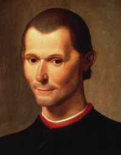

|  | Inicio | Politica | El Príncipe | Contacto |

Espejo de príncipes. El Príncipe es la obra más conocida de Maquiavelo. Se trata de una composición poco organizada, lejos de la estructura típica de los tratados políticos. Fue escrito en 1513 con la intención de congraciarse con los Medici. Pertenece al género literario “espejo de príncipes”, muy típico en el pensamiento político florentino de la época (podemos encontrar obras de este género de autores como Coluccio Salutati, Girolamo Savonarola, Marsilio Ficino, Giovanni Pontano, Bartolomeo Sacchi, Francesco Patrizi o Diomede Carafa).
El objetivo del libro es proponer al príncipe las reglas que le han de ayudar a conseguir el éxito, esto es, el logro del honor y la gloria por medio de la buena gobernación de sus dominios. Para conseguir el éxito es necesario que el príncipe tenga la fortuna de su parte. Y para ello, el príncipe debe ser virtuoso. En este punto, Maquiavelo se separa de la tradición filosófica-política, ya que mientras los demás autores citados entienden la virtud como un conjunto de valores morales, él confiere un nuevo sentido al concepto, separándose de la moral. De hecho, afirma que este tipo de virtudes no tienen por qué ser útiles para el buen gobierno y que pueden llevar a un príncipe a la ruina en vez de a la gloria.
Para Maquiavelo, las virtudes morales no siempre son operativas en el príncipe, porque tiene que tratar con hombres malos. Por ello, es partidario de aplicar el principio de la necessità a la conducta del príncipe. Así, este, a menudo, se ve obligado para conservar su Estado a actuar contra la caridad, contra la humanidad, contra la religión. Por eso necesita estar dispuesto a actuar en función del curso de los acontecimientos y de las variaciones de la fortuna.
El príncipe debe estar preparado para seguir dos tipos diferentes de conducta según la necesidad:
Para Maquiavelo, el Principado es un poder personal de tipo militar, de acuerdo con su concepción violenta de la vida política.
Los principados pueden ser de dos tipos: hereditarios o nuevos. Los hereditarios no le merecen mucha reflexión. Simplemente piensa que una monarquía hereditaria consolidada es un régimen fácil, que solo tiene que evitar complicaciones.
En cambio, centra su pensamiento en los principados nuevos y pone como trasfondo la situación italiana. Maquiavelo los clasifica según el modo de obtención del poder, sin que le interese lo más mínimo el tema de la legitimidad o el derecho:
Maquiavelo se centra más en estas dos últimas formas de acceso al poder, poniendo ejemplos de la Italia de su época